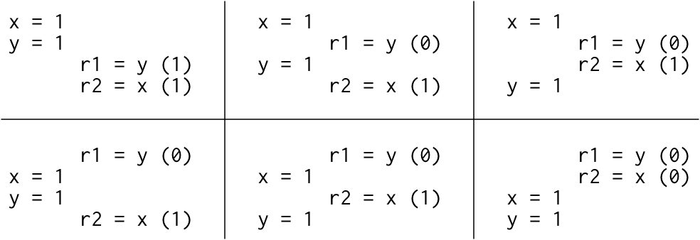

Russ Cox关于内存模型的系列文章之一。这是第一篇 Hardware Memory Models
简介: 童话之终局
很久以前，当每个人都写单线程程序的时候，让程序运行得更快最有效的方法之一是坐下来袖手旁观。下一代硬件和编译器的优化结果可以让程序像以前一样运行，只是速度会更快。在这个童话般的年代，有一个判断优化是否有效的简单测试方法:如果程序员不能区分合法程序的未优化执行结果和优化执行的结果之间的区别(除了速度的区别)，那么这个优化就是有效的。也就是说，有效的优化不会改变有效程序的行为。
几年前， 某个悲伤的日子，硬件工程师发现让单个处理器越来越快的魔法失效了。不过，他们发现了一个新的魔法，可以让他们创造出拥有越来越多处理器的计算机，操作系统使用线程抽象模型向程序员展示了这种硬件并行能力。这种新的魔法——多处理器以操作系统线程的形式提供并行能力——对硬件工程师来说效果更好，但它给编程语言设计者、编译器作者和程序员带来了严重的问题。
许多在单线程程序中不可见(因此有效)的硬件和编译器优化会在多线程程序中产生明显的结果变化。如果有效的优化没有改变有效程序的行为，那么这些优化应该被认为是无效的。或者现有程序必须被声明为无效的。到底是哪一个，怎么判断？
这里有一个类似C语言的简单示例程序。在这个程序和我们将要考虑的所有程序中，所有变量最初都设置为零。
|
|
如果线程1和线程2都运行在自己专用处理器上，都运行到完成，这个程序能打印 0 吗？
看情况(It depends)。这取决于硬件，也取决于编译器。在x86多处理器上, 如果逐行翻译成汇编的程序执行的话总是会打印1。但是在ARM或POWER多处理器上，如果逐行翻译成汇编的程序可以打印0。此外，无论底层硬件是什么，标准编译器优化都可能使该程序打印0或进入无限循环。
“看情况”(It depends)并不是一个圆满的结局。程序员需要一个明确的答案来判断一个程序是否在新的硬件和新的编译器上能够正确运行。硬件设计人员和编译器开发人员也需要一个明确的答案，说明在执行给定的程序时，硬件和编译后的代码可以有多精确。因为这里的主要问题是对存储在内存中数据更改的可见性和一致性，所以这个契约被称为内存一致性模型（memory consistency model）或仅仅是内存模型(memory model)。
最初，内存模型的目标是定义程序员编写汇编代码时硬件提供的保证。在该定义下，是不包含编译器的内容的。25年前，人们开始尝试写内存模型 ，用来定义高级编程语言(如Java或C++)对用该语言编写代码的程序员提供的保证。在模型中包含编译器会使得定义一个合理模型的工作更加复杂。
这是关于硬件内存模型和编程语言内存模型的两篇文章中的第一篇。我写这些文章的目的是先介绍一下背景，以便讨论我们可能想要对Go的内存模型进行的改变。但是，要了解Go当前状况，我们可能想去哪里，首先我们必须了解其他硬件内存模型和语言内存模型的现状，以及他们采取的道路。
还是那句话，这篇文章讲的是硬件。假设我们正在为多处理器计算机编写汇编语言。程序员为了写出正确的程序，需要从计算机硬件上得到什么保证？四十多年来，计算机科学家一直在寻找这个问题的好答案。
顺序一致性
Leslie Lamport 1979年的论文《How to Make a Multiprocessor Computer That Correctly Executes Multiprocess Programs》引入了顺序一致性的概念:
The customary approach to designing and proving the correctness of multiprocess algorithms for such a computer assumes that the following condition is satisfied: the result of any execution is the same as if the operations of all the processors were executed in some sequential order, and the operations of each individual processor appear in this sequence in the order specified by its program. A multiprocessor satisfying this condition will be called sequentially consistent.
为这种计算机设计和证明多处理算法正确性的通常方法假定满足下列条件:任何执行的结果都是相同的，就好像所有处理器的操作都是按某种顺序执行的，每个处理器的操作都是按程序指定的顺序出现的。满足这一条件的多处理器系统将被称为顺序一致的。
今天，我们不仅讨论计算机硬件，还讨论保证顺序一致性的编程语言，当程序的唯一可能执行对应于某种线程操作交替成顺序执行时。顺序一致性通常被认为是理想的模型，是程序员最自然的工作模式。它允许您假设程序按照它们在页面上出现的顺序执行，并且单个线程的执行只是以某种顺序交替(interleaving)，而不是以其他方式排列。
人们可能会有理由质疑顺序一致性是否应该是理想的模型，但这超出了本文的范围。我只注意到，考虑到所有可能的线程交替(interleaving)依然存在，就像在1979年一样，即使过了四十几年，Leslie Lamport的“设计和证明多处理算法正确性的惯用方法”，依然没有什么能取代它。
之前我问这个程序能不能打印0:
|
|
为了让程序更容易分析，让我们去掉循环和打印，并询问读取共享变量的可能结果:
|
|
我们假设每个例子都是所有共享变量最初都被设置为零。因为我们试图确定硬件允许做什么，我们假设每个线程都在自己的专用处理器上执行，并且没有编译器来对线程中发生的事情进行重新排序:列表中的指令就是处理器执行的指令。rN这个名字表示一个线程本地寄存器，而不是一个共享变量，我们会问一个线程本地寄存器的值在执行结束时是否存在某种可能。
这种关于样本程序执行结果的问题被称为litmus test。因为它只有两个答案——这个结果可能还是不可能？——litmus test为我们提供了一种区分内存模型的清晰方法:如果一个模型支持特定的执行，而另一个不支持，那么这两个模型显然是不同的。不幸的是，正如我们将在后面看到的，一个特定的模型对一个特定的litmus test给出的答案往往令人惊讶。
If the execution of this litmus test is sequentially consistent, there are only six possible interleavings:
如果该litmus test的执行顺序一致，则只有六种可能的交替:

因为没有交替执行的结果会产生r1 = 1, r2 = 0,所以这个结果是不允许的。也就是说，在顺序执行的硬件上，litmus test执行结果出现r1 = 1, r2 = 0是不可能的。
顺序一致性的一个很好的思维模型是想象所有处理器直接连接到同一个共享内存，它可以一次处理一个线程的读或写请求。 不涉及缓存，因此每次处理器需要读取或写入内存时，该请求都会转到共享内存。 一次使用一次的共享内存对所有内存访问的执行施加了顺序顺序：顺序一致性。

(本文中三个内存模型图摘自 Maranget et al. “A Tutorial Introduction to the ARM and POWER Relaxed Memory Models.”)
上图是顺序一致机器的模型，而不是构建机器的唯一方法。 实际上，可以使用多个共享内存模块和缓存来构建顺序一致的机器来帮助预测内存获取的结果，但顺序一致意味着机器的行为必须与该模型并无二致。 如果我们只是想了解顺序一致执行意味着什么，我们可以忽略所有这些可能的实现复杂性并只考虑这个模型。
不幸的是，对于我们程序员，放弃严格的顺序一致性可以让硬件更快地执行程序，所以所有现代硬件在各方面都会偏离了顺序一致性。准确定义具体的硬件偏离是相当困难的。本文以当今广泛使用的硬件中的两种内存模型为例:x86、ARM和POWER处理器系列。
x86 Total Store Order (x86-TSO)
现代x86系统的内存模型对应于以下硬件图:
所有处理器仍然连接到一个共享内存，但是每个处理器都将对该内存的写入(write)放入到本地写入队列中。处理器继续执行新指令，同时写操作(write)会更新到这个共享内存。一个处理器上的内存读取在查询主内存之前会查询本地写队列，但它看不到其他处理器上的写队列。其效果就是当前处理器比其他处理器会先看到自己的写操作。但是——这一点非常重要——所有处理器都保证写入(存储store)到共享内存的(总)顺序，所以给这个模型起了个名字:总存储有序，或TSO。当一个写操作到达共享内存时，任何处理器上的任何未来读操作都将看到它并使用该值(直到它被以后的写操作覆盖，或者可能被另一个处理器的缓冲写操作覆盖)。
写队列是一个标准的先进先出队列:内存写操作以与处理器执行相同的顺序应用于共享内存。因为写入顺序由写入队列保留，并且由于其他处理器会立即看到对共享内存的写入，所以我们之前考虑的通过litmus test的消息与之前具有相同的结果:r1 = 1，r2 = 0仍然是不可能的。
|
|
写队列保证线程1在y之前将x写入内存，关于内存写入顺序(总存储有序)的系统级协议保证线程2在读y的新值之前读x的新值。因此，r1 = y在r2 = x看不到新的x之前不可能看到新的y。存储顺序至关重要:线程1在写入y之前先写入x，因此线程2在看到x的写入之前不可能看到y的写入。
在这种情况下，顺序一致性和TSO模型是一致的，但是他们在其他litmus test的结果上并不一致。例如，这是区分两种型号的常用示例:
|
|
在任何顺序一致的执行中，x = 1或y = 1必须首先发生，然后另一个线程中的读取必须能够观察到它(此赋值事件)，因此r1 = 0，r2 = 0是不可能的。但是在一个TSO系统中，线程1和线程2可能会将它们的写操作排队，然后在任何一个写操作进入内存之前从内存中读取，这样两个读操作都会看到零。
这个例子看起来可能是人为制造的，但是使用两个同步变量确实发生在众所周知的同步算法中，例如德克尔算法或彼得森算法，以及特定的方案。如果一个线程没有看到另一个线程的所有写操作，线程就可能会中断。
为了修复同步算法，我们需要依赖于更强的内存排序，非顺序一致的硬件提供了称为内存屏障(或栅栏)的显式指令，可用于控制排序。我们可以添加一个内存屏障，以确保每个线程在开始读取之前都会刷新其先前对内存的写入:
|
|
加上正确的障碍，r1 = 0，r2 = 0也是不可能的，德克尔或彼得森的算法就可以正常工作了。内存屏障有很多种；具体细节因系统而异，不在本文讨论范围之内。关键是内存屏障的存在给了程序员或语言实现者一种在程序的关键时刻强制顺序一致行为的方法。
最后一个例子，说明为什么这种模式被称为总存储有序。在该模型中，读路径上有本地写队列，但没有缓存。一旦一个写操作到达主存储器，所有处理器不仅都认同该值存在，而且还认同它相对于来自其他处理器的写操作的先后顺序。考虑一下这个litmus test:
|
|
如果线程3看到x先于y变化，那么线程4能看到y先于x变化吗？对于x86和其他TSO机器，答案是否定的:对主内存的所有存储(写入)都有一个总顺序，所有处理器都认同这个顺序，只是每个处理器在到达主内存之前都先知道自己的写入而已。
x86-TSO 之路
x86-TSO模型看起来相当整洁，但是这条道路充满了路障和错误的弯道。在20世纪90年代，第一批x86多处理器可用的手册几乎没有提到硬件提供的内存模型。
作为问题困扰的一个例子，Plan 9 是第一个在x86上运行的真正多处理器操作系统(没有全局内核锁)。1997年，在移植到多处理器 奔腾Pro的过程中，开发人员被写队列litmus test的不期望的行为所困扰。一小段同步代码假设r1 = 0，r2 = 0是不可能的，但它确实发生了。更糟糕的是，英特尔手册对内存模型的细节模糊不清。
针对邮件列表中提出的“使用锁最好保守一点，不要相信硬件设计师会做我们期望的事情”的建议，Plan 9的一名开发人员很好地解释了这个问题:
我当然同意。我们会在多处理器中遇到更宽松的顺序(relaxed ordering )。问题是，硬件设计者认为什么是保守的？在临界区的开头和结尾强制互锁对我来说似乎相当保守，但我显然不够富有想象力。奔腾Pro的手册在描述缓存和怎么使它们保持一致时非常详细，但似乎不在乎说任何关于执行或read顺序的细节。事实是，我们无法知道自己是否足够保守。
在讨论过程中，英特尔的一名架构师对内存模型做了非正式的解释，指出理论上，即使是多处理器486和奔腾系统也可能产生r1 = 0，r2 = 0的结果，并且奔腾Pro只是具有更大的流水线和写队列，所以会更频繁地暴露了这种行为。
这位英特尔架构师还写道:
Loosely speaking, this means the ordering of events originating from any one processor in the system, as observed by other processors, is always the same. However, different observers are allowed to disagree on the interleaving of events from two or more processors.
Future Intel processors will implement the same memory ordering model.粗略地说，这意味着从系统中任何一个处理器产生的事件的顺序，正如其他处理器所观察到的，总是相同的。然而，允许不同的观察者对来自两个或更多处理器的事件的交替有不同的观察结果。
未来的英特尔处理器将采用相同的内存顺序模式。
声称“允许不同的观察者对来自两个或更多处理器的事件的交替有不同的观察结果”是在说，IRIW litmus test的答案在x86上可以回答“是”，尽管在前面的部分我们看到x86回答“否”。这怎么可能呢？
答案似乎是，英特尔处理器实际上从未对这一litmus test做出“是”的回答，但当时英特尔架构人员不愿意为未来的处理器做出任何保证。体系结构手册中存在的少量文本几乎没有任何保证，使得很难针对它们进行编程。
Plan 9的讨论不是一个孤立的事件。从11月下旬开始，Linux内核开发人员在他们的邮件列表上讨论了100多条消息。
在接下来的十年里，越来越多的人遇到了这些困难，为此，英特尔的一组架构师承担了为当前和未来的处理器写下有用的处理器行为保证的任务。第一个结果是2007年8月出版的Intel 64 Architecture Memory Ordering White Paper，旨在为“软件作者提供对不同顺序的内存访问指令可能产生的结果的清晰理解”。同年晚些时候，AMD在AMD64 Architecture Programmer's Manual revision 3.14中发布了类似的描述。这些描述基于一个被称为“总锁序+因果一致性”(TLO+CC)的模型，故意弱于TSO。在公开访谈中，英特尔架构师表示，TLO+CC“像要求的那样强大，但并不足够强大。”特别是，该模型保留了x86处理器在IRIW litmus test中回答“是”的权利。不幸的是，内存屏障的定义不够强大，不足以重建顺序一致的内存语义，即使每个指令之后都有一个屏障。更糟糕的是，研究人员观察到实际的英特尔x86硬件违反了TLO+CC模型。例如:
|
|
2008年晚些时候对英特尔和AMD规范的修订保证了IRIW case的“不”，并加强了内存屏障，但仍允许不可预期的行为，这些行为似乎不会出现在任何合理的硬件上。例如:
|
|
为了解决这些问题，欧文斯等人在早期SPARCv8 TSO模型的基础上提出了x86-TSO模型提案。当时，他们声称“据我们所知，x86-TSO是可靠的，足够强大，可以在上面编程，并且大致符合供应商的意图。“几个月后，英特尔和AMD发布了广泛采用这一模式的的新手册。
似乎所有英特尔处理器从一开始就实现了x86-TSO，尽管英特尔花了十年时间才决定致力于此。回想起来，很明显，英特尔和AMD的设计师们正在努力解决如何编写一个能够为未来处理器优化留出空间的内存模型，同时仍然为编译器作者和汇编语言程序设计者提供有用的保证。“有多强就有多强，但没有多强”是一个艰难的平衡动作。
ARM/POWER Relaxed Memory Model
现在让我们来看看一个更宽松的内存模型，在ARM和POWER处理器上找到的那个。在实现层面上，这两个系统在许多方面有所不同，但保证内存一致性的模型大致相似，比x86-TSO甚至x86-TLO+CC稍弱。
ARM和POWER系统的概念模型是，每个处理器从其自己的完整内存副本中读取和向其写入，每个写入独立地传播到其他处理器，随着写入的传播，允许重新排序。
这里没有总存储顺序。虽然没有描述，但是每个处理器都被允许推迟读取(read)，直到它等到它需要结果:读取(read)可以被延迟到稍后的写入(write)之后。在这个宽松的(relaxed)模型中，我们迄今为止所看到的每一个litmus test的答案都是“yes，这真的可能发生。”
对于通过litmus test的原始消息，单个处理器对写入的重新排序意味着线程1的写入可能不会被其他线程以相同的顺序观察到:
|
|
在ARM/POWER模型中，我们可以想象线程1和线程2都有各自独立的内存副本，写操作以任何顺序在内存之间传播。如果线程1的内存在发送x的更新(update)之前向线程2发送y的更新，并且如果线程2在这两次更新之间执行，它将确实看到结果r1 = 1，r2 = 0。
该结果表明，ARM/POWER内存模型比TSO更弱:对硬件的要求更低。ARM/POWER模型仍然承认TSO所做的各种重组:
|
|
在ARM/POWER上，对x和y的写入(write)可能会写入本地存储器，但当读取发生在相反的线程上时，写入可能尚未传播开来。
下面是一个litmus test，它展示了x86拥有总存储顺序意味着什么:
|
|
在ARM/POWER上，不同的线程可能以不同的顺序观察到不同的写操作。它们不能保证对到达主内存的总写入顺序达成一致的观察效果，因此线程3可以在y变化之前之前看到x的变化，而线程4可以在x变化之前看到y的变化。
作为另一个例子，ARM/POWER系统具有内存读取(负载 load)的可见缓冲或重新排序，如下面litmus test所示:
|
|
任何顺序一致的交替必须从线程1的r1 = x或线程2的r2 = y开始，该读取必须看到一个0，使得结果r1 = 1，r2 = 1不可能。然而，在ARM/POWER存储器模型中，处理器被允许延迟读取，直到指令流中稍后的写入之后，因此y = 1和x = 1在两次读取之前执行。
尽管ARM和POWER内存模型都允许这一结果，但Maranget等人(2012年)报告说，只能在ARM系统上凭经验重现，而不能在POWER上复制。在这里，模型和真实度之间的差异开始发挥作用，就像我们在检查英特尔x86时一样:硬件实现比技术保证更强大的模型会鼓励对更强的行为的依赖，这意味着未来更弱的硬件将破坏程序，无论是否有效。
像TSO系统上一样，ARM和POWER也有内存屏障，我们可以在上面的例子中插入这些内存屏障，以强制顺序一致的行为。但显而易见的问题是，没有内存屏障的ARM/POWER是否完全排除了任何行为。任何litmus test的答案是否都是“no，那不可能发生？” 当我们专注于一个单一的内存位置时，它可以。
这里有一个litmus test，它可以测试即使在ARM和POWER上也不会发生的事情:
|
|
这个litmus test与前一个测试类似，但是现在两个线程都在写入单个变量x，而不是两个不同的变量x和y。线程1和2将冲突的值1和2都写入x，而线程3和线程4都读取x两次。如果线程3看到x = 1被x = 2覆盖，那么线程4能看到相反的情况吗？
答案是no的，即使在ARM/POWER上也是如此:系统中的线程必须就写入单个内存位置的总顺序达成一致。也就是说，线程必须同意哪些写入会覆盖其他写入。这个性质叫做相干性。如果没有一致性属性，处理器要么不同意内存的最终结果，要么报告内存位置从一个值翻转到另一个值，然后又回到第一个值。编写这样一个系统是非常困难的。
我故意忽略了ARM和POWER弱内存模型中的许多微妙之处。更多详细信息，请参阅彼得·苏厄尔关于该主题的论文。有两个要点要记住。首先，这里有令人难以置信的微妙之处，这是由有非常持久力、非常聪明的人进行了十多年学术研究的主题。我自己并不声称完全理解。这不是我们应该希望向普通程序设计人员解释的事情，也不是我们在调试普通程序时希望能够坚持的事情。第二，允许和观察到的结果之间的差距造成了不幸的未来惊喜。如果当前的硬件没有展现出所有允许的行为——尤其是当首先很难推理出什么是允许的时候！—那么不可避免地会编写一些程序，这些程序会偶然地依赖于实际硬件的更受限制的行为。如果一个新的芯片在行为上受到的限制更少，那么硬件内存模型在技术上允许破坏程序的新行为——也就是说，这个错误在技术上是你的错——这一事实并不能给你带来什么安慰。这不是写程序的方法。
弱排序和无数据竞争的顺序一致性
到目前为止，我希望您确信硬件细节是复杂而微妙的，而不是您每次编写程序时都想解决的问题。 相反，它有助于识别“如果你遵循这些简单的规则，你的程序只会产生结果，就像通过一些顺序一致的执行的那样。” （我们仍在谈论硬件，所以我们仍在谈论交替独立的汇编指令。）
Sarita Adve and Mark Hill proposed exactly this approach in their 1990 paper “Weak Ordering – A New Definition”. They defined “weakly ordered” as follows.
Sarita Adve和Mark Hill在他们1990年的论文“Weak Ordering – A New Definition”中正是提出了这种方法。他们把“弱有序”定义为如下。
Let a synchronization model be a set of constraints on memory accesses that specify how and when synchronization needs to be done.
同步模型是对内存访问的一组约束，这些约束指定了何时以及如何进行同步。
硬件相对于同步模型是弱有序的，当且仅当它在顺序上与遵守同步模型的所有软件一致时。
虽然他们的论文是关于捕捉当时的硬件设计(不是x86、ARM和POWER)，但将讨论提升到特定设计之上的想法使论文与今天的讨论依然相关。
我之前说过“有效的优化不会改变有效程序的行为。”这些规则定义了什么是有效的手段，然后任何硬件优化都必须让这些程序像在顺序一致的机器上一样工作。当然，有趣的细节是规则本身，定义程序有效的约束。
Adve和Hill提出了一种同步模型，他们称之为无数据竞争(data-race-free，DRF)。该模型假设硬件具有独立于普通内存读写的内存同步操作。普通的内存读写可以在同步操作之间重新排序，但不能在跨它们移动。(也就是说，同步操作也可用来做重新排序的内存屏障。)如果对于所有理想化的顺序一致的执行，从不同线程对同一位置的任何两个普通存储器访问要么都是读取，要么通过同步操作强制一个在另一个之前发生而分开执行，则程序被称为无数据竞争的。
我们来看一些例子，摘自Adve和Hill的论文(为了演示而重新绘制)。这里有一个线程执行变量x的写操作，然后读取同一个变量。
垂直箭头标记了单个线程内的执行顺序:先写后读。这个程序没有竞争，因为一切都在一个线程中。
相比之下，在这个双线程程序中有一个竞争:
这里线程2在不与线程1协调的情况下写入x。线程2的写入与线程1的写入和读取竞争。如果线程2读x而不是写x，程序在线程1写和线程2读之间只有一个竞争。每个竞争至少涉及一次写入:两次不协调的读取不会相互竞争。
为了避免竞争，我们必须添加同步操作，这将在共享一个同步变量的不同线程上的操作之间强制一个特定的顺序。如果同步S(a)(在变量a上同步，用虚线箭头标记)迫使线程2的写操作在线程1完成后发生，则竞争被消除-
现在线程2的写操作不能与线程1的操作同时发生。
如果线程2只是读取，我们只需要与线程1的写入同步。两次读取仍然可以同时进行:
线程可以按同步顺序排序，甚至可以使用中间线程。这个程序没有竞争:
另一方面，同步变量的使用本身并不能消除竞争:错误地使用它们是可能的。下面这个程序有一个竞争:
线程2的读取与其他线程中的写入完全同步——这肯定发生在两者之后——但是这两个写入本身并不同步。这个程序并不是data-race-free。
Adve和Hill将弱排序描述为“软件和硬件之间的契约”，具体来说，如果软件避免了数据竞争，那么硬件就好像是顺序一致的，这比我们在前面部分研究的模型更容易推理。但是硬件如何满足它的契约呢？
Adve和Hill给出了硬件“遵循DRF弱排序”的证明，这意味着它执行无数据竞争的程序，就好像是按照顺序一致的顺序一样，只要它满足一组特定的最低要求。我不打算详谈细节，但重点是在Adve和Hill的论文发表后，硬件设计师们有了一份由理论支持的手册:做这些事情，你就可以断言你的硬件将与data-race-free程序顺序一致。事实上，假设同步操作的适当实现，大多数宽松的硬件确实是这样做的，并且一直在继续这样做。Adve和Hill最初关注的是VAX，但x86、ARM和POWER肯定也能满足这些限制。这种系统保证无数据竞争程序的顺序一致性的观点通常被缩写为DRF-SC。
DRF-SC标志着硬件内存模型的一个转折点，为硬件设计者和软件作者提供了一个清晰的策略，至少是那些用汇编语言编写软件的人。正如我们将在下一篇文章中看到的，高级编程语言的内存模型问题没有一个整洁的答案。
下一篇，关于编程语言内存模型，计划在7月5日那一周。然后专门计划在7月12日的那一周发布一篇关于Go内存模型的文章。
致谢
这一系列的帖子从我有幸在谷歌共事的一长串工程师的讨论和反馈中受益匪浅。我感谢他们。我对任何错误或不受欢迎的意见承担全部责任。